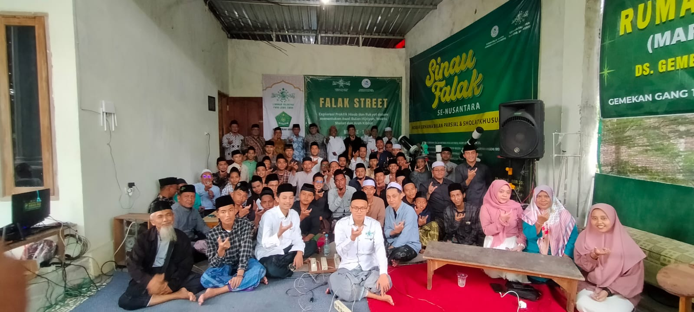

Kajian Ilmu Falak
Pembelajaran teori hisab, arah kiblat, dan kalender hijriah.
Ilmu Falak Astronomi & Rukyatul Hilal
Wadah santri untuk belajar ilmu falak, observasi langit, dan rukyatul hilal dengan pendekatan ilmiah serta adab pesantren.Lajnah Falakiyah Mahika merupakan wadah dedikasi dalam menyingkap tabir langit melalui integrasi ilmu astronomi dan khazanah keislaman guna memberikan panduan ibadah yang presisi bagi umat. Dengan semangat pengabdian yang tinggi kami berkomitmen untuk terus mengamati pergerakan benda langit serta melakukan perhitungan hisab yang akurat demi menjaga harmoni waktu dan syariat di tengah masyarakat.
Lajnah Falakiyah PP Manbaul Hikam merupakan sebuah lembaga otonom di bawah naungan Pondok Pesantren Manbaul Hikam (Putat, Sidoarjo) yang berfokus pada pengkajian, pengembangan, dan penerapan ilmu falak (astronomi Islam). Lembaga ini menjadi wadah bagi para santri dan pakar untuk mendalami metodologi perhitungan waktu ibadah serta fenomena langit berdasarkan integrasi antara khazanah kitab kuning dan sains modern.
Pembelajaran teori hisab, arah kiblat, dan kalender hijriah.
Praktik pengamatan hilal setiap akhir bulan hijriah.
Santri belajar pengoperasian alat optik untuk observasi langit.
Tempat rukyatul hilal berada di Lantai 4 Aula Raudhotul Huffadz, Pondok Pesantren Manba'ul Hikam.
Lokasi ini dipilih karena memiliki pandangan langit yang lebih terbuka, sehingga mendukung proses observasi hilal secara optimal.
Menjadi pusat pengembangan ilmu falak pesantren yang modern, beradab, dan bermanfaat bagi umat.



Hari ini kami belajar bahwa menentukan waktu bukan sekadar melihat kalender, tapi tentang membaca tanda-tanda kebesaran-Nya di langit. ✨ Rangkaian kegiatan dimulai dengan Seminar [SINAU FALAK], di mana kami mendalami metode hisab dan astronomi modern sebagai landasan ilmiah. Tak berhenti di teori, langkah kami berlanjut ke [Pondok Pesantren Manba'ul Hikam] untuk melaksanakan Rukyatul Hilal. Memadukan ketelitian perhitungan dan kesabaran dalam pengamatan adalah ikhtiar kami untuk menjemput Awal Bulan dengan penuh keyakinan.
🌙🔭Terima kasih kepada seluruh narasumber dan peserta yang telah hadir menyatukan visi antara sains dan syariat.🌙🔭